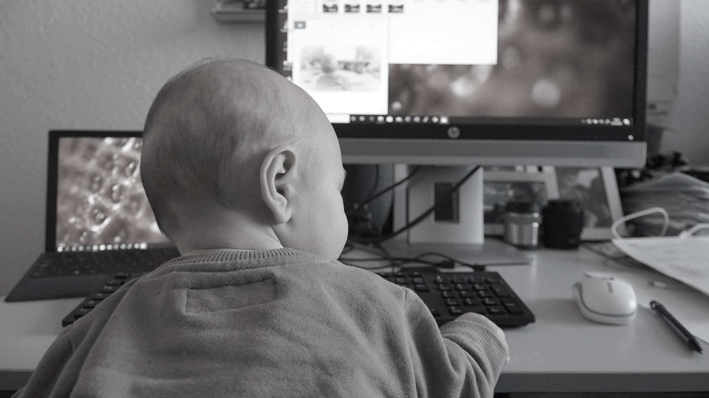

A gestação Dev
O nascimento
O nascimento de algo nos faz pensar em muitas coisas. Para muitos é sinônimo de alegria, encantamento, sorrisos abobacados e felicitações. Para outros, não há essa pieguice toda: o nascimento é um processo duro, visceral, que denota muito esforço e dedicação com o objetivo de se alcançar algo.
Saindo da esfera romanesca, sou do grupo dos segundos, isto é, acredito que todo nascimento tem um Back-End bem suado. Não falo sem propriedade - sou pai de uma menina-pimenta de 4 aninhos que demanda ainda bastante do paizão aqui - e acredito que vivemos de gestação todos os dias (mas não vou me alongar neste assunto agora).
O caminho
Já que agora podemos reconhecer esta coisa 'sombria' (pois misteriosa) que é o nascimento, deixa eu te falar outra: porque para termos um real conhecimento e habilidade em desenvolvimento haveria de ser diferente?! Para nos tornar devs (desenvolvedores) é exatamente assim. Não há uma receita milagrosa que nos tire do estagnismo e da ignorância e nos entregue tudo que precisamos saber para viramos steves jobs brasileiros. Não meu caro! Não minha cara!
Trate já de arregaçar suas mangas, agendar seu oftalmologista, por a almofadinha de meditação na cadeira, e preparar seu café! Sua jornada está apenas começando!
Nessas horas me lembro de um provérbio africando que se encaixa muito bem sobre o que foi dito acima: "E enquanto você reza, vá fazendo."